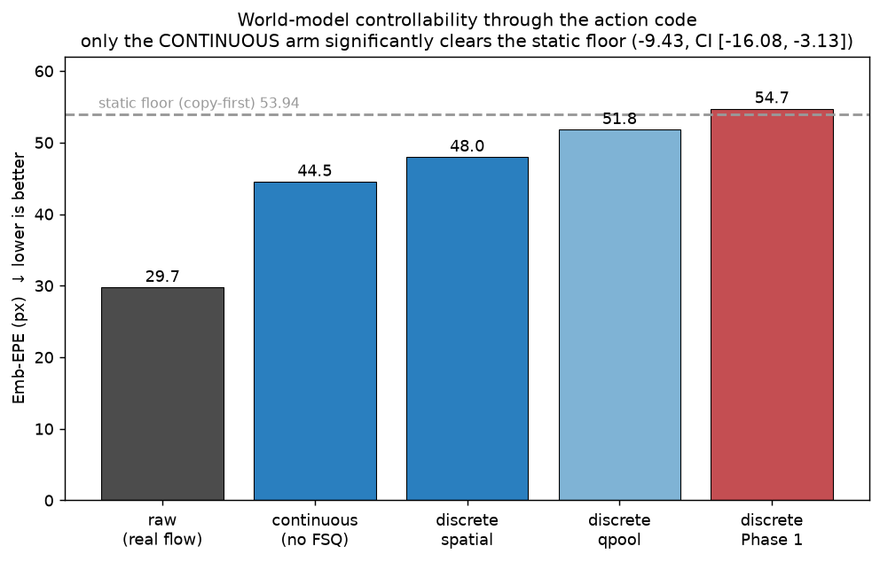
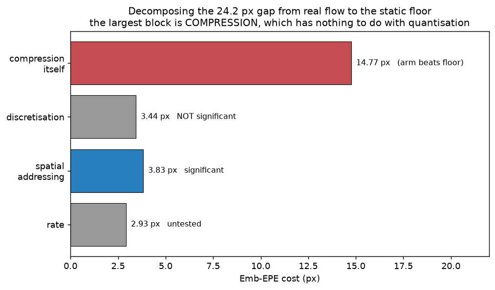
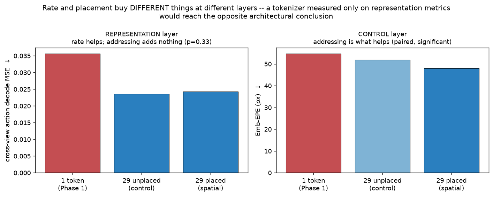
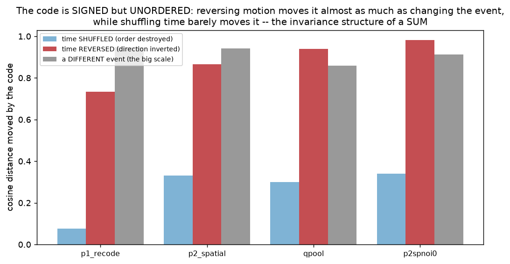
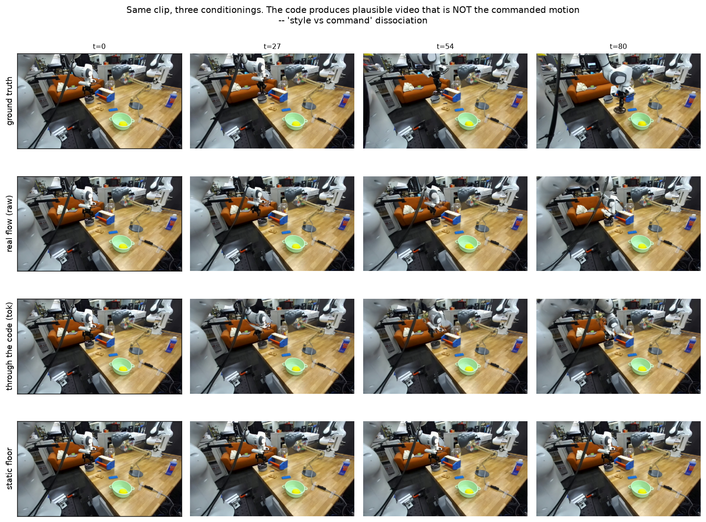
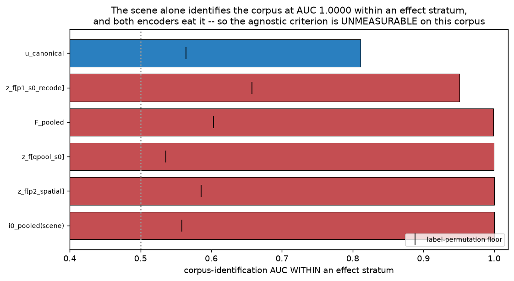
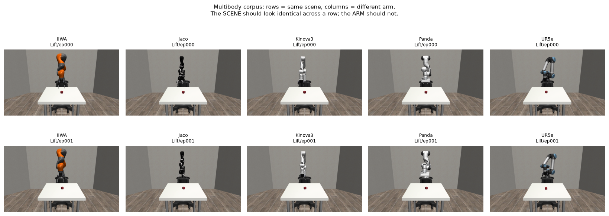
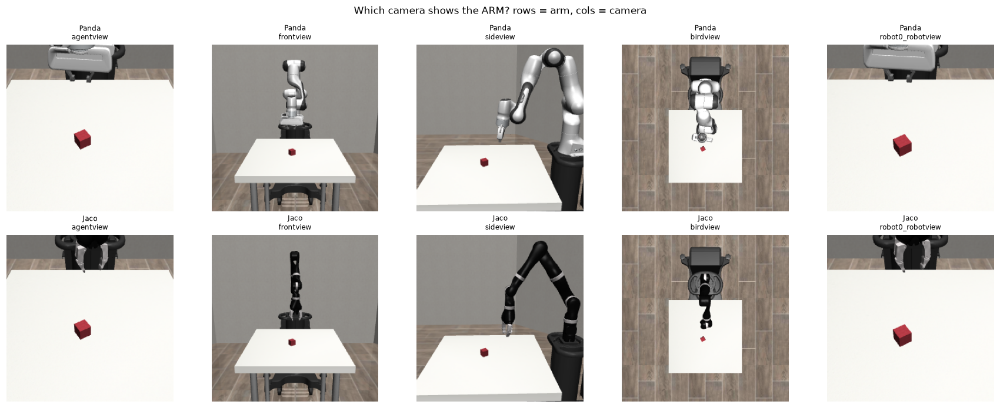
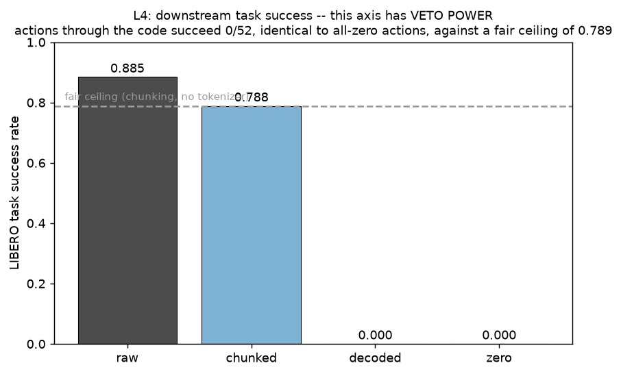

Learning a discrete, cross-embodiment action representation constrained
jointly by robot control and visual motion — and measuring, honestly, how far that gets.
This page collects the measured results of a single project. The short version:
we can compress a world model's motion interface into an action code, the code carries real
motion content, and we can now say precisely what each design choice buys — but the
compression itself, not the discretisation, is what stops it working, and the corpus everyone
in this literature uses makes the central question unanswerable.
Reading discipline used throughout. Every arm is reported against its floors, every
comparison that is not statistically resolved is labelled as such on the figure itself, and
results that turned out to be measuring our own harness are reported as such rather than
quietly dropped — one section below exists specifically to record a run we invalidated
and what its control caught.
What the world model loses, and to what
The world model is conditioned on action flow — the image-plane displacement
of visible surface points. The question is whether that interface survives being squeezed
through a compact action code. It does not, but the failure decomposes cleanly.

Controllability (Emb-EPE, lower better) of the frozen world model when driven by
real flow versus flow reconstructed from the code. The continuous arm is the first in this
project to significantly clear the static floor; every discrete arm fails to.

The 24.2 px gap between real flow and the static floor, split by cause with
each step's test status. The largest block by far is compression itself — which the
continuous code loses too, so it is not a quantisation problem.
The result we did not expect
We built a rate-matched control: the same number of tokens per frame, but each token pooled
over the whole image instead of tied to a location. That isolates addressing from
rate. The two layers give opposite answers.

At the representation layer, extra tokens help and placement adds nothing
(p = 0.33). At the control layer, placement is what the world model needs. A
tokenizer evaluated only on representation metrics would reach the opposite architectural
conclusion.
What the code actually encodes
Shuffling the flow in time barely moves the code; reversing the direction of motion moves
it almost as much as swapping in a completely different event. Order-invariant and
sign-equivariant is the symmetry structure of a sum — which is independent
confirmation that the visual view is supplying the integrated constraint that
per-step action reconstruction provably cannot.

The same fact is the sharpest limitation: two motions with equal net displacement
but different temporal profiles are indistinguishable in this code.

Qualitatively: driven through the code the world model produces plausible video
that is not the commanded motion. The static floor, for contrast, does not move at
all.
Why the central question is currently unanswerable
“Embodiment-agnostic” should mean that given what actually happened in the
world, the code says nothing extra about which body did it. Testing that requires the body to
vary independently of everything else. On the standard corpus it does not.

The scene alone identifies the data source at AUC 1.0000 within an
effect stratum, and both encoders take the scene as input. Even the raw inputs are
near-perfectly separable, so “does the code leak identity” cannot be separated
from “does the code represent anything”.
The fix, built. We render the same simulated scene with five genuinely
different robots, verifying rather than asserting that the scenes match (initial object
layouts agree to under a millimetre across arms). This makes the criterion measurable for the
first time. It does not make the arm invisible — after the tie is broken, the
scene predicting the body is legitimate morphology rather than a dataset fingerprint, and the
two become distinguishable.

Rows are the same scene; columns are different arms. Scene, camera and object
placement are identical; the body is not.

Choosing the camera by a pixel-difference metric would have picked
sideview (highest score) and lost the task object; the correct choice,
frontview, scored lowest. The camera was chosen by looking.
The verdict: downstream task success
This axis has veto power in the project, and it had never been applied to this tokenizer.
The first run was invalid and its own control caught it: the no-tokenizer
“chunked” arm scored 0.269 against an independently validated 0.756, meaning the
harness’s reconstruction — not the code — was being measured. With the
validated upsampler the control returns to 0.789, and the real answer appears.

Actions passed through the code succeed on 0 of 52 episodes —
identical to all-zero actions — against a fair ceiling of 0.789. Whatever the
representation-layer metrics say, this code does not preserve executable action.
Why the control mattered. Had we run only ground truth versus decoded, we would have
reached the correct conclusion (“tokenizer scores zero, veto”) on the
basis of wrong evidence — 0.52 of that first gap was our own reconstruction
defect, not the code.